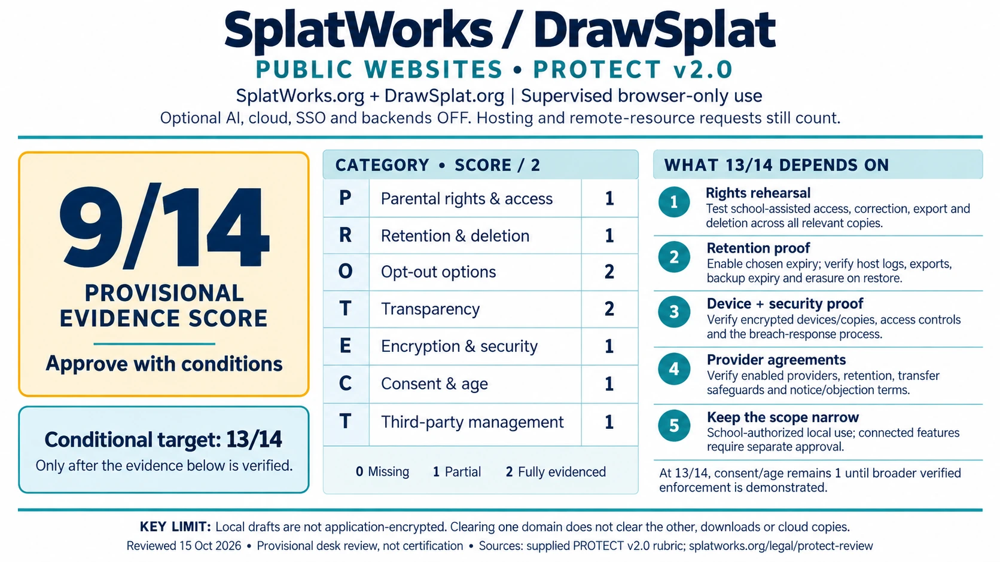
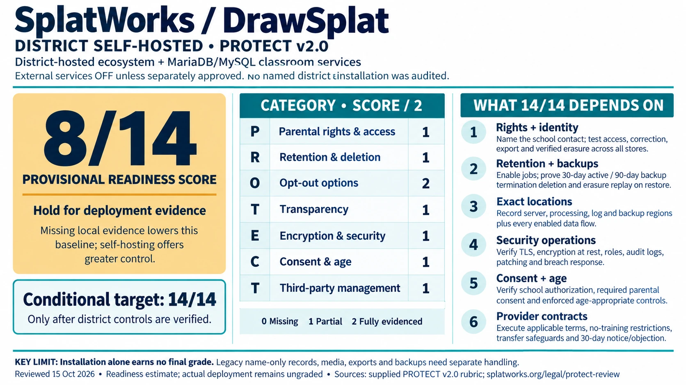

PROTECT controls and deployment review
Reviewed October 15, 2026. PROTECT v2.0 scores seven categories from 0 to 2. The target is 13–14/14 after evidence is verified for the selected deployment. This page does not automatically certify an installation or assign it that score.
Public websites and district self-hosted report cards
These October 15, 2026 report cards are a conservative review of the documented controls and available evidence, using the supplied PROTECT v2.0 rubric. They separate current evidence from conditional targets. Publishing the graphics does not raise a score, certify compliance, or approve every feature.


Public-site scope: supervised browser-only use on SplatWorks.org and DrawSplat.org, with optional AI, cloud, SSO and backends off. Public hosting and remote-resource requests remain in scope. Local editing does not mean that loading a page makes no network requests.
District scope: the self-hosted ecosystem with district MariaDB/MySQL classroom services, with external services off unless separately approved. The 8/14 is a provisional deployment-readiness baseline reflecting missing district-specific evidence. No named installation was audited; its actual deployment review remains ungraded until verified. Self-hosting offers greater control over the outstanding requirements.
| Category | Public evidence | District readiness |
|---|---|---|
| Parental rights and access | 1 | 1 |
| Retention and deletion | 1 | 1 |
| Opt-out options | 2 | 2 |
| Transparency | 2 | 1 |
| Encryption and security | 1 | 1 |
| Consent and age restrictions | 1 | 1 |
| Third-party management | 1 | 1 |
| Total | 9/14 — approve with conditions | 8/14 — hold for deployment evidence |
A 0 means missing protection, 1 means partial coverage, and 2 means the full descriptor is evidenced for the stated scope. Under the rubric, 12–14 is Approve, 9–11 is Approve with conditions, and 6–8 is Hold. Any missing legal prerequisite still blocks the affected use. See the downloadable assessment for each category's rationale; re-audit at least annually and after material changes.
Individual horizontal report cards




Artwork was generated with the built-in image generator and checked against the assessment. Individual-card prompts · Comparison prompt. The accessible text and dated assessment define the review scope.
Improve the public website score: 9 to 13
Close the four partial categories below to add one point each, while maintaining the current opt-out and transparency protections. These are pending evidence checkpoints, not completed controls. A 13/14 target applies to a defined, school-authorized local-use deployment with verified device and operational safeguards; the public website operator cannot verify every visitor's device or school procedures.
1. Parental rights and access: 1 to 2
Website operator: operate the published public-site privacy contact, document identity verification and routing, and rehearse a request involving host-held metadata. Do not ask families to upload student records or identity documents to a public form.
School/device owner: publish a monitored school contact and rehearse assisted access, correction, export and erasure using synthetic records in SplatWorks.org privacy controls and DrawSplat.org privacy controls. Check each relevant profile, app and exported copy. Keep a redacted completion receipt showing acknowledgment within 10 school days and fulfillment within 30 calendar days, or any shorter applicable deadline.
2. Retention and deletion: 1 to 2
Website operator: verify the actual Cloudflare request-log/security-data retention, account settings and deletion path; publish the confirmed data-type schedule and any limits. The current schedule identifies provider retention as an unresolved evidence item.
School/device owner: intentionally select and test the appropriate 1-, 7- or 30-day browser expiry; verify downloads, shared copies, device backups and erasure replay after restore. Record the applicable active-copy termination deadline of 30 calendar days and backup deadline of 90 calendar days. Offline devices clear on return; expiration is not remote erasure. Preserve current work until its owner explicitly enables expiry or clears it.
3. Encryption and security: 1 to 2
Website operator: retain verified HTTPS and hardening headers, document administrator access and patching, and rehearse the published incident-response procedure, including notification within 72 hours after a confirmed student-data breach or a shorter applicable deadline. Collect actual configuration/test evidence.
School/device owner: prove device and relevant copy/backup encryption, isolated browser profiles and least-privilege access. Browser drafts are not application-encrypted at rest. HTTPS does not establish local-storage encryption. A website-only update cannot close this gap for unmanaged devices.
4. Third-party management: 1 to 2
Website operator: complete a runtime network review for the approved app set and verify every enabled host, library, font and media provider against the provider register. Check actual terms/account coverage, jurisdiction, transfer safeguards, retention, no-sale/no-profiling/no-training restrictions and the 30-day change-notice/objection process. A register entry or linked DPA does not establish an executed agreement. Where feasible, serve dependencies locally after compatibility testing.
School reviewer: register the notice contact and approve applicable provider terms and component boundaries. Keep optional AI, cloud, SSO and backends off until separately reviewed. The current connection preference covers fetch/XHR/beacon; it is not a firewall for navigation, media, embeds or every library request. Use approved network controls where needed and confirm behavior in the browser.
What would make 14 possible?
Consent and age would also need to move from 1 to 2: demonstrate the approved age bands, school authorization and any required verified parental consent before covered processing, with enforced age-appropriate defaults and eligible-student rights across the selected components. An AI approval checkbox or self-declared age is insufficient. Broader public/direct-family use needs its own assessment; a supervised-local score cannot be reused for it.
Next review: attach the redacted receipts, configuration evidence and applicable agreements to Score this deployment, record the exact scope and date, and have the authorized reviewer rescore each completed checkpoint. Do not include student records or secrets in the evidence notes.
Controls available across the ecosystem
- Privacy controls on registered apps and their public entry pages: origin-local data export, explicit clearing, opt-in expiry, connection preferences and request routing.
- Existing projects and native file formats are preserved. Retention is not silently enabled during an upgrade.
- Five AI task tools retain local and AI workflows; provider keys stay in tab memory and the first AI request requires approval.
- Common HSTS, CSP, nosniff, referrer and permission restrictions, combined with tighter app policies where applicable.
- Reproducible per-component storage/reference inventory; public-host metadata and optional services remain disclosed.
- District database export/erasure includes private boards, classroom submissions/feedback, memberships, sessions and time usage. Legacy name-only records require verified manual matching.
Retention and deletion schedule
Full schedule by data type. Enable browser expiry from Your privacy. For school storage, enable and test the corresponding backend retention job. At termination return/export data, delete active copies within 30 calendar days, and delete/age out backup copies within 90 calendar days. Preserve only a documented legal obligation or irreversibly de-identified data, with an explicit end date and no re-identification.
Offline devices cannot be remotely erased. Browser cleanup is checked on return. Downloaded files, both domains, third-party cloud storage and backups are separate copies. Keep a deletion receipt for every location. On restoring a backup, reapply outstanding erasures before reopening the service.
Rights, consent and age matrix
Parents and eligible students can request access, correction, export, deletion or pause through their school or the public-site privacy contact. Acknowledge within 10 school days and fulfill within 30 calendar days, subject to any shorter applicable legal deadline. Verify identity through established school/family channels, minimize requested proof, and provide an assisted non-digital path. Do not email student exports or identity documents to the developer contact.
| Band | Required protection |
|---|---|
| Under 13 / unknown minor | Private local defaults; supervised use. Document educational school authorization or required verified parental authorization before covered connected processing. Approve each external service and its age limits separately. |
| 13–17 | Same no-sale/no-profiling/no-training protections, applicable parent rights, state requirements and approved service age limits. |
| 18+ eligible student | Student exercises their own records rights as applicable; the same data-use and security limits apply. |
For direct-family collection requiring parental consent, the operator verifies a signed authorization through an established verified channel before enabling collection, records purpose/services/retention and withdrawal, and provides access/correction/deletion. The local notice, self-declared age, or an API approval checkbox is not a substitute. No public child account registration is offered. Age-band enforcement in the whiteboard backend does not govern unrelated school services.
Evidence required for 13–14 points
Review the selected components and configuration, then record evidence for every category. A 2 requires the full PROTECT descriptor, including operational evidence; use 1 for partial coverage and 0 for absent/contradictory protection.
- Parental rights: a monitored contact, verified request rehearsal and completed export/correction/deletion receipt for all relevant record locations.
- Retention: enabled schedules for each data type, expiry/deletion test, termination return/destruction and backup expiry/restore test.
- Opt-outs: local workflow test, connection choices, no-sale/no-profiling/no-training terms, approved API/provider settings, GPC/DNT posture.
- Transparency: current per-component inventory, exact hosting/log/backup regions, providers, policy dates and change-notice registration.
- Security: actual HTTPS/headers, disk/database/object/backup encryption, least-privilege roles, protected audit logs, breach drill, secrets and patch procedures.
- Consent/age: approved age bands, documented school authorization and required parent verification, older-minor protections, service age restrictions, supervised defaults.
- Third parties: completed provider register, jurisdictions, processing/transfer contracts, no-sale/no-training flow-down and 30-day notice/objection process.
Software tests cannot prove a district’s encryption, contracts, identity verification or backup destruction. Those items stay pending until an authorized reviewer supplies evidence. Leave optional processing off when approval is missing. Existing signed agreements are not amended by a website update.
Score this deployment
This form stays in the current tab and downloads locally. No results are sent to SplatWorks. Avoid student records in evidence notes.
Contacts and incidents
Public-site requests and vulnerabilities: drawsplat@gmail.com. School records: the district’s published privacy contact. Confirmed breaches involving student information must be reported to the affected district without unreasonable delay and within 72 hours of confirmation, with shorter applicable legal deadlines taking precedence. Preserve logs, contain access, document scope and remediation, and provide the district a post-incident report within 30 days.
Sources and limits
Generated component inventory · Provider register · Terms and privacy · Addendum · NDPA/DPA packet · Remaining deployment limits.